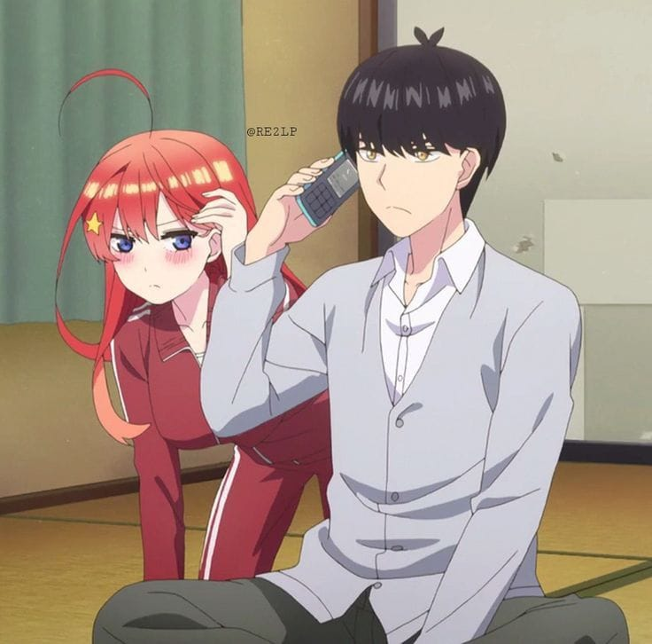

Go-Tōbun no Hanayome trasciende la mera comedia romántica convencional para adentrarse en reflexiones profundas en torno al crecimiento personal, el aprendizaje cooperativo y la construcción de la identidad en la adolescencia. A través de la interacción cotidiana entre Fuutarou Uesugi y las quintillizas Nakano, el autor explora dimensiones éticas y emocionales que resultan de gran valor formativo.
El pilar temático cardinal sobre el cual se sustenta la narrativa es la concepción del estudio y la disciplina intelectual como vehículos de emancipación personal. En la obra, el fracaso académico de las cinco hermanas no se atribuye a una deficiencia de inteligencia innata, sino a bloqueos emocionales no resueltos: el complejo de culpa de Yotsuba, el duelo no asimilado de Itsuki, la carga de autosacrificio de Ichika, el temor a la fragmentación familiar en Nino y la baja autoestima en Miku (Haruba, 2019).
Fuutarou no ofrece fórmulas mágicas ni atajos simplistas; por el contrario, les transmite mediante el ejemplo cotidiano que el trabajo metódico y la constancia sostenida representan el único sendero verídico para tomar las riendas del propio destino. Esta premisa didáctica revaloriza el esfuerzo individual como un catalizador ético y social indispensable (Haruba, 2019).
Al compartir idéntica información genética y una apariencia externa compartida durante la niñez, las protagonistas enfrentan el dilema existencial de forjar una identidad auténtica. Negi Haruba convierte la fisonomía de las quintillizas en una brillante metáfora visual sobre la individualización: los diferentes cortes de cabello, los atuendos, los accesorios distintivos y la adopción de sueños profesionales propios simbolizan la conquista de su individualidad (Kodansha, 2020).
La decisión compartida de conservar el apellido materno Nakano y su posterior determinación de independizarse para costear su vivienda subrayan un acto de madurez cívica: aprender a ser reconocidas y valoradas como personas autónomas, dotadas de virtudes y defectos particulares, y no como un bloque homogéneo e intercambiable (Kodansha, 2020).
La figura de la difunta madre, Rena Nakano, proyecta una sombra tutelar en toda la historia. La ausencia materna forzó a cada hermana a adoptar mecanismos de defensa particulares para procesar la orfandad. La obra destaca por la sensibilidad psicológica con que retrata el duelo en la juventud y cómo los traumas infantiles pueden condicionar el comportamiento adulto (Haruba, 2020).
A pesar de la inevitable rivalidad que surge al coincidir sus afectos hacia Fuutarou, el vínculo de lealtad y fraternidad entre las cinco prevalece siempre sobre cualquier interés egoísta. La premisa fundamental que su madre les inculcó —"incluso si nos separamos, siempre seremos una sola familia"— se consagra como el pacto supremo que las sostiene ante la adversidad (Haruba, 2020).
La transformación del propio Fuutarou ejemplifica un mensaje pedagógico de hondo calado. Al inicio, el protagonista concibe la enseñanza desde una perspectiva fría, tecnicista y soberbia, juzgando a las jóvenes únicamente a partir de números en una boleta de calificaciones. A lo largo de la tutoría, comprende que la verdadera docencia requiere empatía activa, capacidad de escucha y comprensión de las circunstancias emocionales del estudiante (Kodansha, 2020).
La evolución de ver a sus alumnas como un simple encargo financiero a considerarlas seres humanos con miedos, anhelos y talentos legítimos dignifica la labor formativa, remarcando que el aprendizaje auténtico solo florece en un entorno de mutuo respeto y calidez comunicativa (Kodansha, 2020).
El impacto editorial de Go-Tōbun no Hanayome consolidó registros históricos en la industria del cómic japonés. En 2018, la serie obtuvo el prestigioso premio Next Manga Award en su categoría digital, catapultando su notoriedad crítica (Next Manga Award, 2018). Con más de veinte millones de ejemplares en circulación mundial, se coronó como la quinta serie más vendida de todo Japón en 2019, manteniéndose en los puestos de cabecera de las listas Oricon durante 2020 (Kodansha, 2020; Oricon, 2020).
La corporación mediática Tokyo Broadcasting System (TBS) reconoció formalmente en sus balances financieros anuales que los ingresos generados por la franquicia de las quintillizas tuvieron un efecto sumamente favorable en sus beneficios globales, demostrando que una obra de romance y vida cotidiana podía competir en rentabilidad con las franquicias más colosales del género fantástico (Crunchyroll, 2020). Su legado incluye además novelizaciones, spin-offs, artbooks y exposiciones oficiales (MyAnimeList, 2021).
El universo sonoro de la serie jugó un papel protagónico en su conexión con el público. Los temas principales de apertura de las dos temporadas televisivas, "Gotōbun no Kimochi" y "Gotōbun no Katachi", fueron interpretados conjuntamente por las cinco actrices de voz estelares agrupadas bajo el nombre artístico Nakano-ke no Itsutsugo (Las quintillizas de la familia Nakano), alcanzando récords de reproducciones y ventas de sencillos digitales (Crunchyroll, 2021).
Asimismo, los temas de cierre tales como "Sign" y "Hatsukoi", sumados a las grabaciones discográficas con temas musicales en solitario para cada una de las hermanas, completaron una producción melódica elogiada por su frescura y capacidad evocativa (Crunchyroll, 2021).
La influencia cultural del título se tradujo en una vasta producción transmedia que abarcó videojuegos oficiales para consolas PlayStation, Nintendo Switch y dispositivos móviles, desarrollados por la compañía MAGES., ofreciendo experiencias interactivas y rutas narrativas alternativas para los seguidores de la obra (Oricon, 2020).
El fenómeno se extendió con masivas exposiciones itinerantes en Tokio y Osaka que recreaban el apartamento de las hermanas a escala real, líneas completas de figuras coleccionables de alta gama y convenciones multitudinarias, cimentando una de las comunidades globales de admiradores más activas y comprometidas de la cultura pop japonesa contemporánea (Oricon, 2020).
La relación tutor-alumno en la obra invierte el modelo tradicional: es Fuutarou quien termina aprendiendo tanto como enseña. Cada hermana le enseña algo que él carecía —Ichika la flexibilidad, Nino la honestidad, Miku la paciencia, Yotsuba la generosidad, Itsuki la constancia—, lo que la obra plantea como una idea pedagógica: la enseñanza genuina es un intercambio mutuo (Anime News Network, 2020).
Además, la obra aborda temas educativos reales como la desmotivación escolar, la presión familiar sobre los resultados y el valor del acompañamiento emocional en el aprendizaje, razones por las que varios docentes japoneses comentaron públicamente usarla como material de conversación con sus estudiantes (Kodansha, 2020).
Go-Tōbun no Hanayome compartió cartelera en la Weekly Shōnen Magazine con otras comedias románticas de tutorías como We Never Learn (2017-2021). Mientras aquella cerraba su historia en un final múltiple, Go-Tōbun apostó por un único desenlace definido, lo que dividió a los fans pero consolidó su identidad narrativa (Anime News Network, 2020).
Su éxito abrió la puerta a una nueva generación de comedias románticas protagonizadas por personajes femeninos fuertes y complejos en revistas shōnen, demostrando que el romance podía sostener ventas masivas fuera del tradicional mercado shōjo (Kodansha, 2020).
La franquicia se expandió con videojuegos para consolas en Japón de formato novela visual, donde el jugador puede seguir rutas de historia centradas en cada hermana; novelas ligeras que novelizan la trama; artbooks oficiales con ilustraciones a color; y figuras de colección a tamaño real de las cinco hermanas exhibidas en eventos (MyAnimeList, 2021).
En América Latina, la serie se popularizó notablemente gracias a su distribución en plataformas de streaming con subtítulos y doblaje latino oficial, lo que consolidó a la franquicia como una de las comedias románticas de anime más reconocidas e influyentes en la región durante el período 2019-2022 (Crunchyroll, 2021).